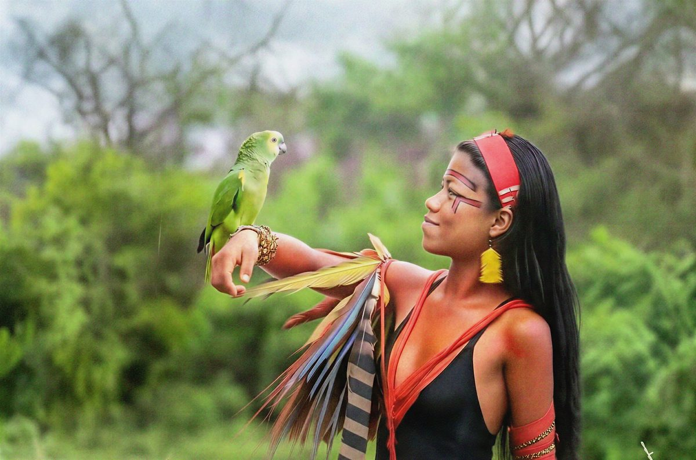

Boe Eno Moto
Mundo Bororo
The Bororo world in its own language, Boe Wadáru: words with their pronunciation, names of animals and plants, texts and videos of the Boe people of Mato Grosso, for speakers, learners and researchers.

On this platform
-
Dictionary
Words and expressions in the Bororo language with Portuguese translations, phonetic transcriptions, and examples.
-
Encyclopedia
Articles about culture, rituals, social organization, and traditional knowledge of the Bororo people.
-
Fauna
Animal names in the Bororo language with traditional classification, scientific names, and images.
-
Ethnobotany
Plants used by the Bororo people with Bororo names, traditional uses, botanical families, and images.
-
Bibliography
Bibliographic references on the language, culture, and history of the Bororo people.
-
Videos
Video recordings of Bororo rituals, ceremonies, and cultural practices hosted on YouTube.